Hosté se rozešli do svých kabin. Vaklaf jde s Darkem do kuchyně, pomoct přichystat pro ně prkno. Na pultě salámy, sýr, kvašená zelenina. Na policích sklenice srovnané jako knihy v knihovně. Indukční plotny, profi odsávač, nože, které pravděpodobně vidí moře častěji než většina lidí. V Darově světě hosté nesedí u kuchyně. Mají svou kabinu, a když Darek dokončí prkno, donese jim ho tam.
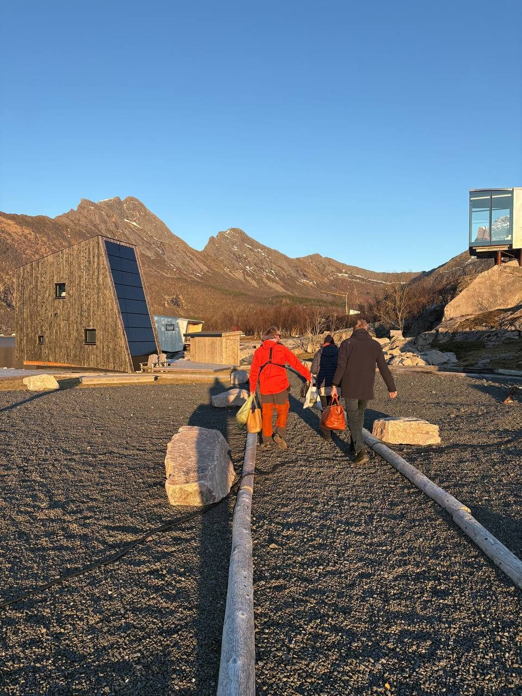
Takhle Darek ubytovává. Dřevěné chatky přisáté ke skále, moře kousek od postele.
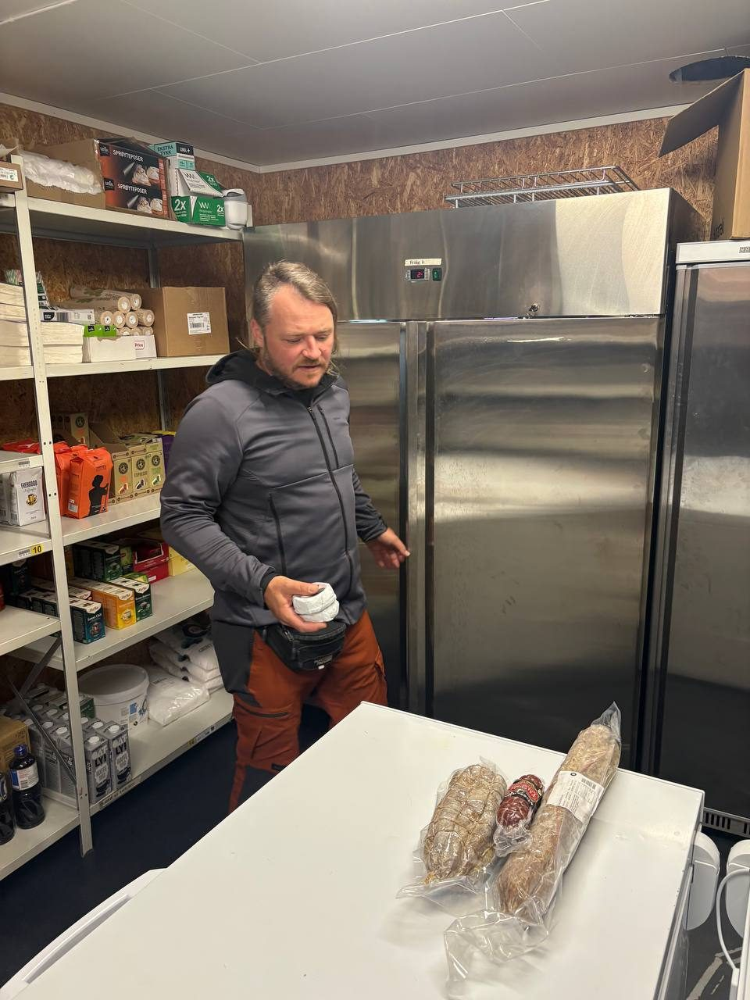
Vaklaf kouká na zásoby. Zatím netuší, že stojí v podniku s Michelin klíčem.
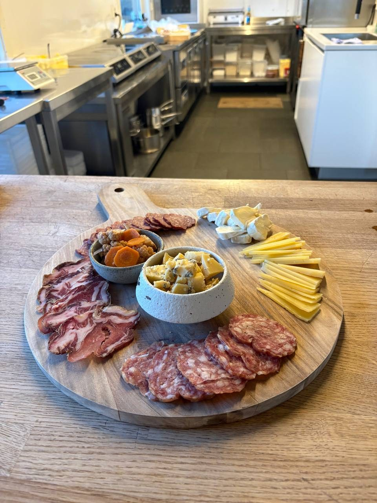
Prkénko. Žádné menu. Žádné ceny. Jen „ochutnej.“
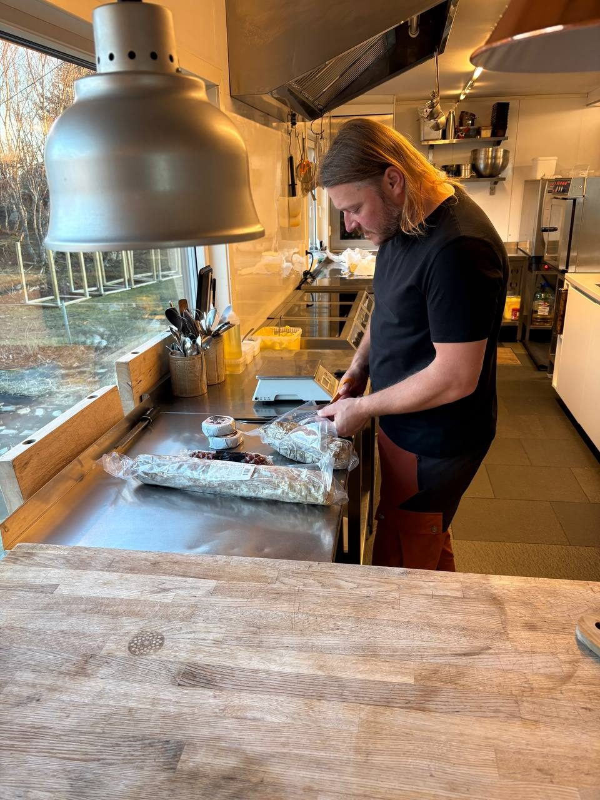
Darek u pultu. Do kuchyně normálně neleze — kuchaři přijedou až další den. Ale prkno pro hosty skládá sám.
A pak si Vaklaf všimne dveří. Na dveřích samolepka. Michelin klíč. Kamarád z havířovské průmyslovky, kterého Vaklaf znal jako kluka, co s ním po škole chodil na pivo, má na dveřích samolepku, kterou dostane hrstka hotelů na světě. Na ostrově nad sedmašedesátkou. Kde nejbližší soused je racek.
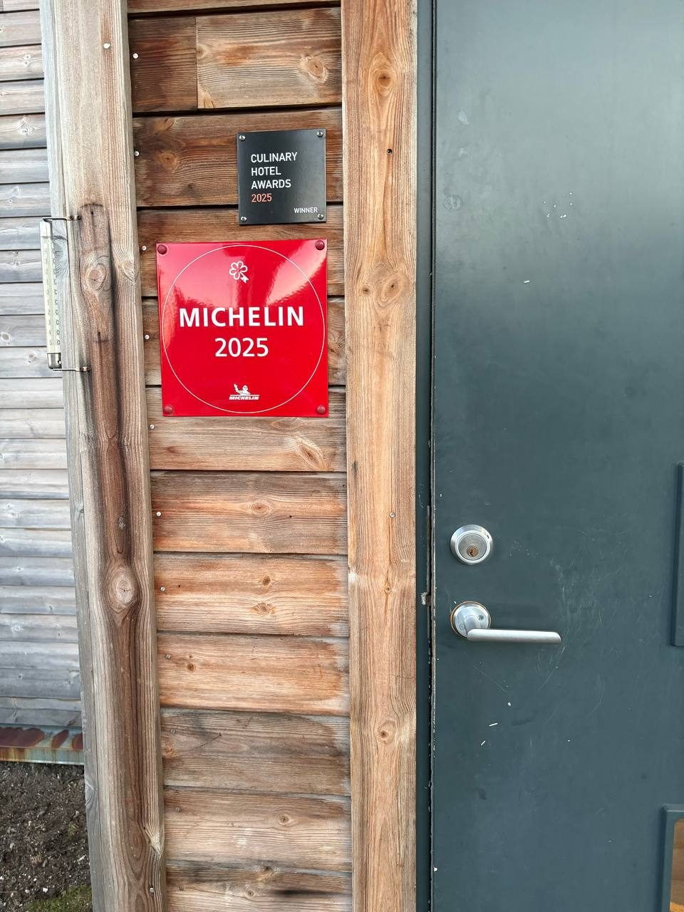
Michelin klíč. Na dveřích. Na ostrově. Kamarád z průmyslovky.
Co je Michelin klíč?
Michelin klíče jsou nový systém hodnocení hotelů, který Michelin představil v dubnu 2024 — ekvivalent slavných hvězd, ale pro ubytování. Jeden, dva nebo tři klíče. Hodnotí se architektura, servis, osobitost, poměr cena/zážitek a příspěvek k místu. Manshausen dostal v roce 2025 jeden klíč — v celé kategorii je v Norsku takových ubytování jen pár.
Do rána — whisky a filozofie
Otevřela se whisky. A když se dva kamarádi vidí poprvé po dlouhých letech, whisky nezůstane u jedné. Řešili zásadní problémy lidstva. Klima. Umělou inteligenci. Proč lidi dělají to, co dělají. Jak vychovat děti, které nebudou debilové. Jestli má smysl psát deník, nebo je to jen sobectví v hezkém obalu. V půl čtvrté měli vyřešené všechno, co se do rána stejně zase rozbije.
Moderní doba je divná věc. Amundsen vyrážel na Jižní pól čtyřicet dní na saních tažených psy, kteří se průběžně snědli. Vaklaf dorazí k Darkovi trajektem s WiFi, Google Maps na mobilu a člunem, co ho vyhodí přímo na molo. Moderní doba vzala dobrodružství a vrátila kamaráda s whisky. Což je možná lepší deal.
Po půlnoci — ohořelá bouda
Po třetí whisky Darek přiznal. „Daro, koukej, máme s Marií doma jenom jednu manželskou postel. Musíš spát venku.“
Venku. Vaklaf si to pojmenoval: ohořelá bouda. Jde samozřejmě o architektonicky oceňovanou chatku z černě spálených prken — finská technika shou sugi ban, prkna se opálí, aby dřevo přežilo sůl a vítr — s panoramatickým skleněným stropem a postelí velikosti malého bytu. Ale po whisky se tomu říká ohořelá bouda.
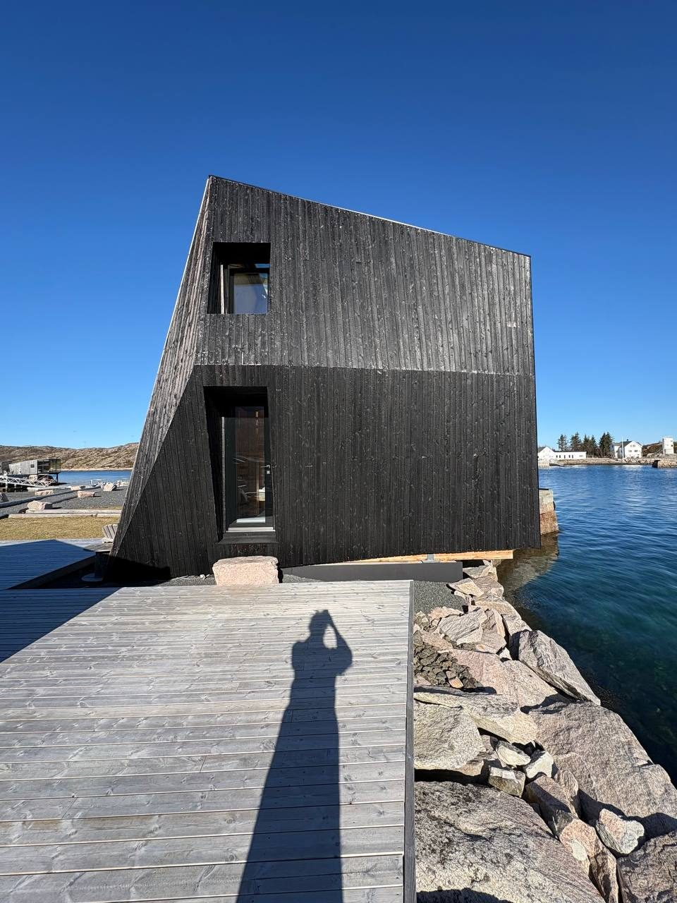
Ohořelá bouda. Zvenku. Prkna spálená schválně, aby přežila sůl a vítr.
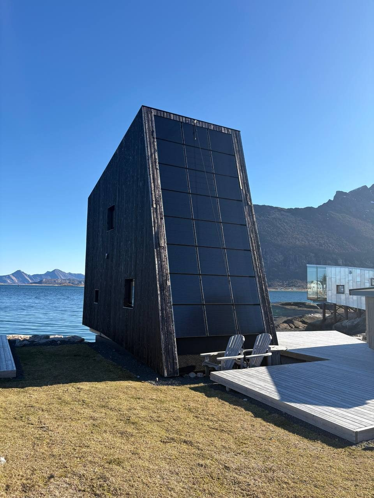
Ze zahrady. Spálená prkna, solární panely, trávník. Funkční minimalismus.
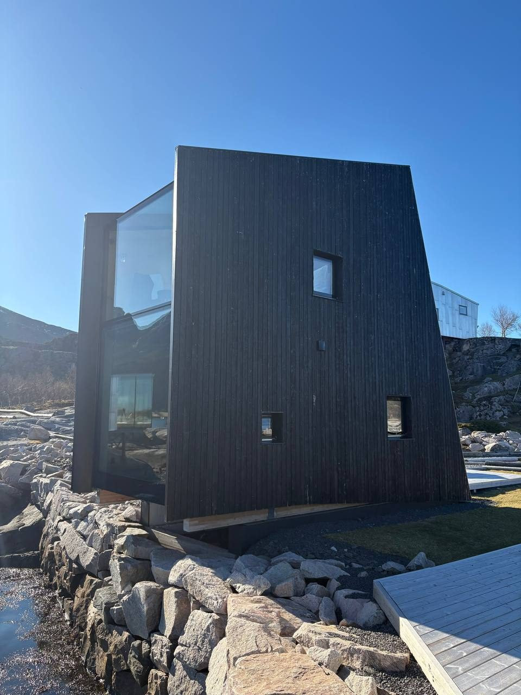
Od moře. Skleněná stěna, spálená prkna, skála. Ostrov si ji jen nechal postavit.
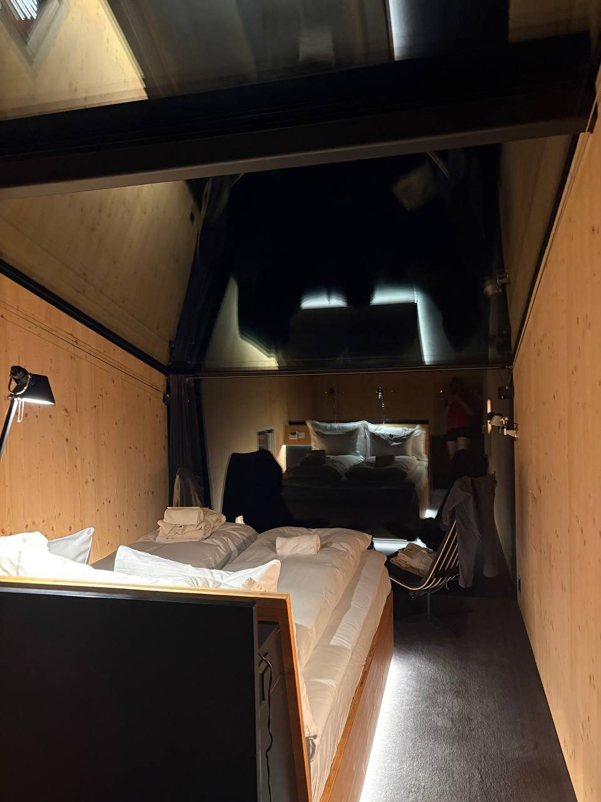
Ohořelá bouda. Uvnitř. Strop z čirého skla. Venku Atlantik.
Cestou do boudy Darek ještě stihl: „Bacha na hlavu, strop neni videt.“ Protože strop je sklo. A v noci za sklem je jenom obloha. A když je člověk po whisky, tak ani to sklo. Člověk prostě jde a doufá, že konstrukce nad ním je zděděná.
Polární záře ta noc nebyla. Vaklaf se díval nahoru a nad ním byly jen hvězdy, horizont světle oranžový od posledního světla, a silueta ostrova. Víc nepotřeboval. Amundsen měl mráz, Vaklaf má sklo.
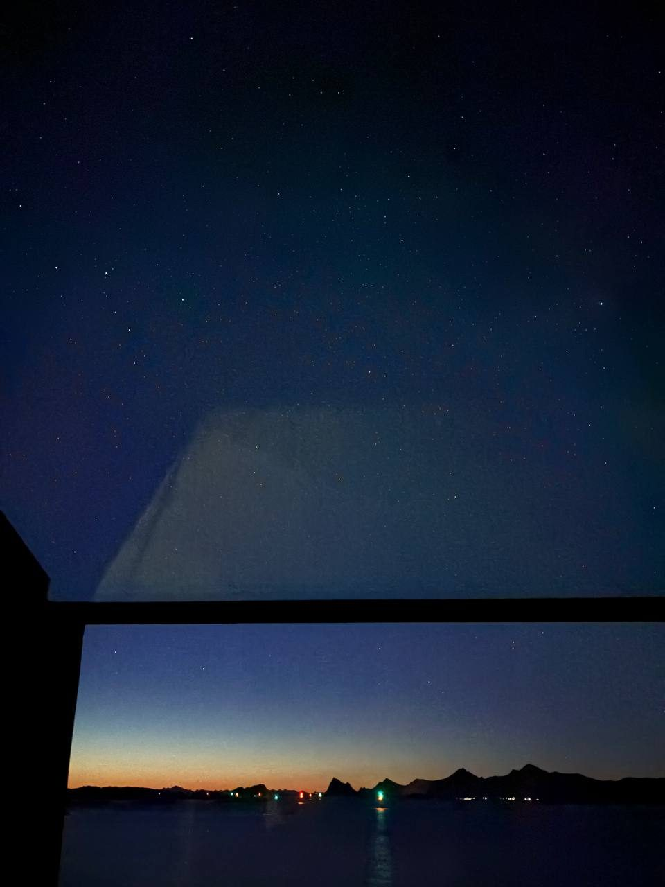
Noční pohled vzhůru. Hvězdy, oranžový horizont, silueta ostrova. Polární záře ne — ta si dnes vzala volno.
„Holly, ty si to tu dost přibarvuješ. Berte ho s rezervou... :)“
— Vaklaf, ohořelá bouda, ráno
Ráno — výhled z postele
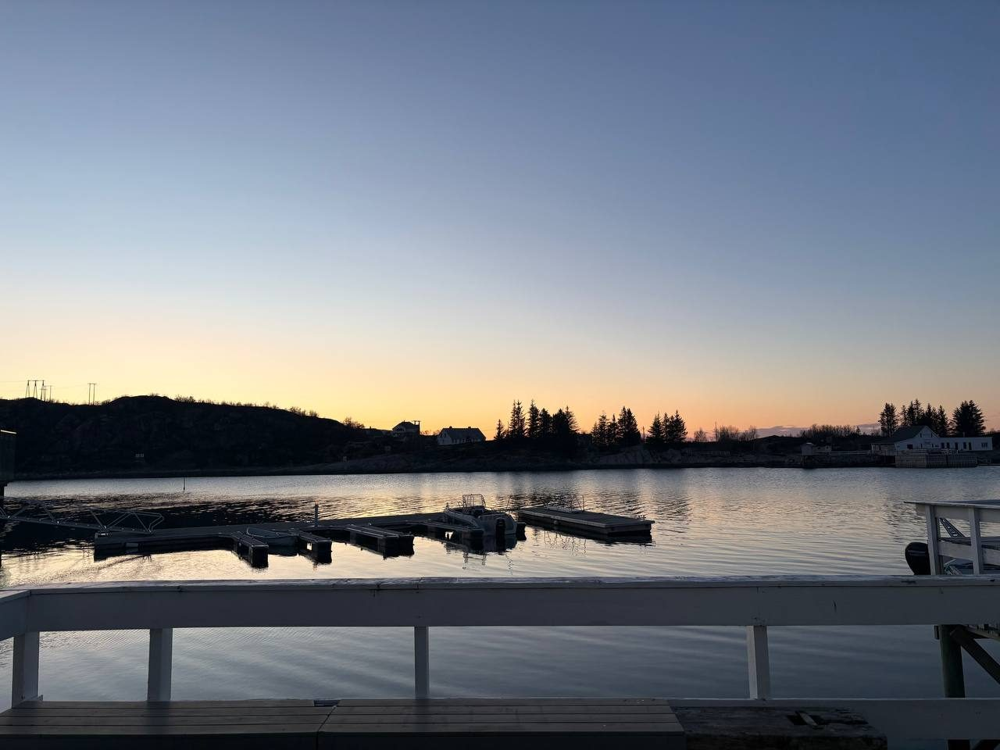
Svítání nad fjordem. Voda jako zrcadlo. Amundsen by tohle nevymyslel.
Probudit se v ohořelé boudě znamená otevřít oči a koukat přímo do oblohy. Ne z okna. Stropem. Vaklaf otevřel oči a měl nad sebou modré nebe, pod sebou peřinu a po stranách skrz panoramatické sklo moře a zasněžené hory. Nemusel vstát. Nemusel se ani posadit. Pohled, za který si lidi na Instagramu najímají fotografy, přišel sám do postele.
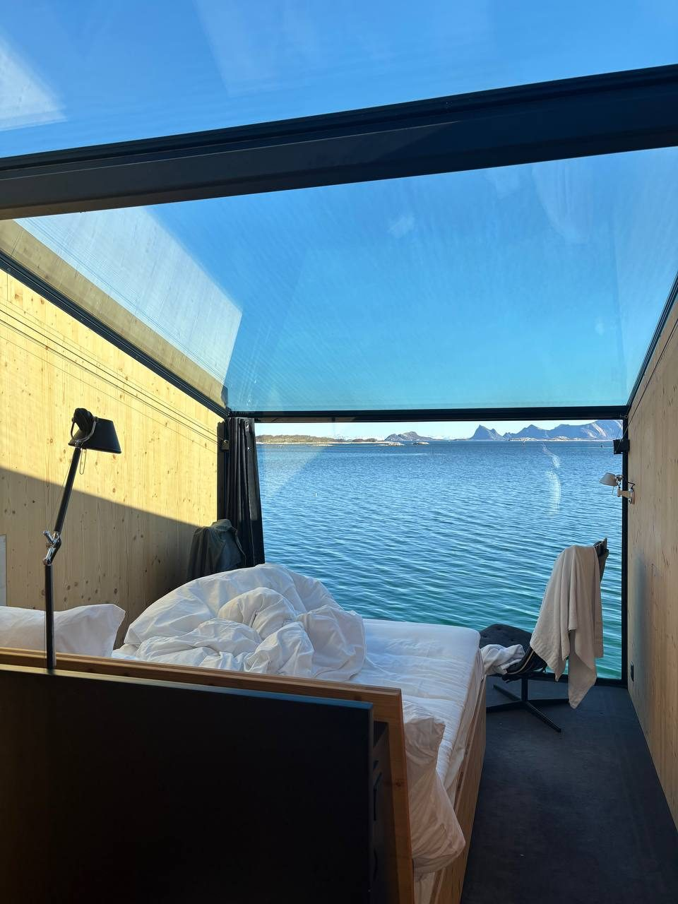
Ráno. Z postele. Peřina, sklo, moře, hory. Žádný filter, žádný vstát.
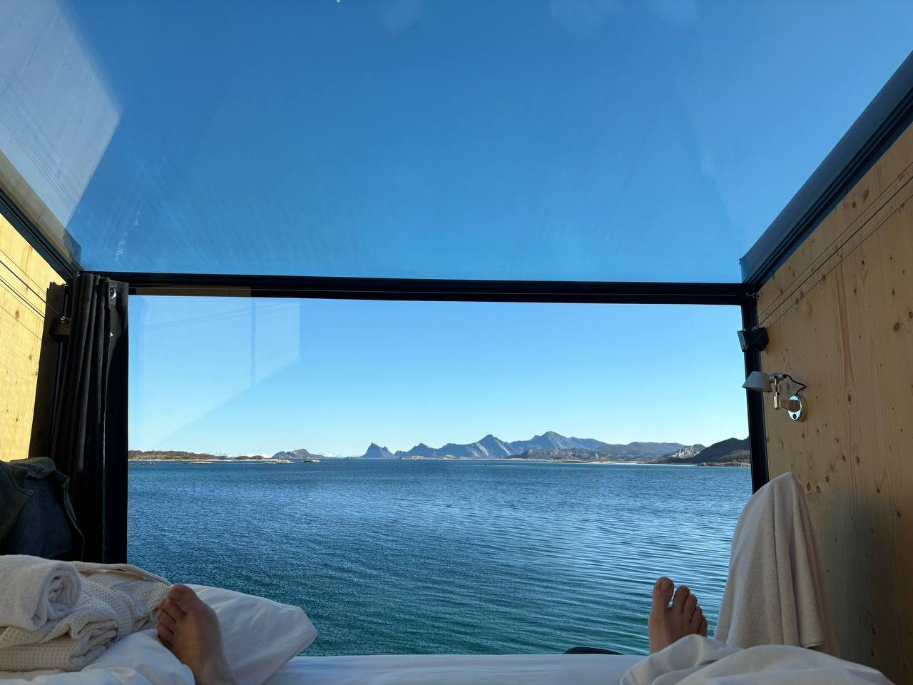
Ráno. Z postele. Nohy, okno, moře, hory. Žádný filter.
Holly včera říkal zataženo, tři stupně. yr.no to říkal. yr.no je norská meteorologická služba, národní zdroj pravdy, aplikace, kterou používá i místní rybář, co z vody čte předpověď líp než z telefonu. yr.no se spletl. Venku je jasno jak v reklamě na life insurance. Příroda nečte předpověď. Příroda si dělá, co chce, a dnes se rozhodla být dokonalá.
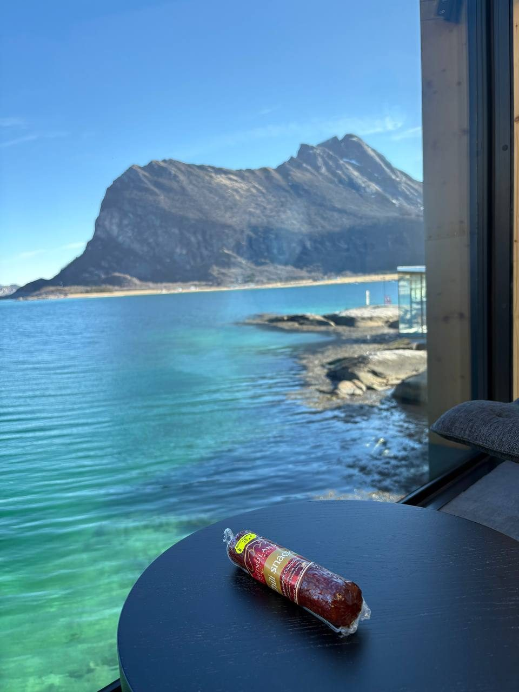
Salám za 35 z akce v Bodø. Výhled za miliony. Matematika severního Norska.
Ten salám pořád leží zabalený v tašce. Holly je zvědavý, jestli ho Vaklaf otevře dřív, než pojede zpátky. Sázky 50:50.
Dopoledne — sauna, bufet, losos
Vaklaf vstal kolem desáté. Další hezký den. Darek mu ráno řekl: „Na tohle počasí si nezvykej.“ Což je věta, kterou na severu říkají lidi, co ví, o čem mluví — a říkají ji tónem, jakým doktor říká „to si nechte prohlédnout.“
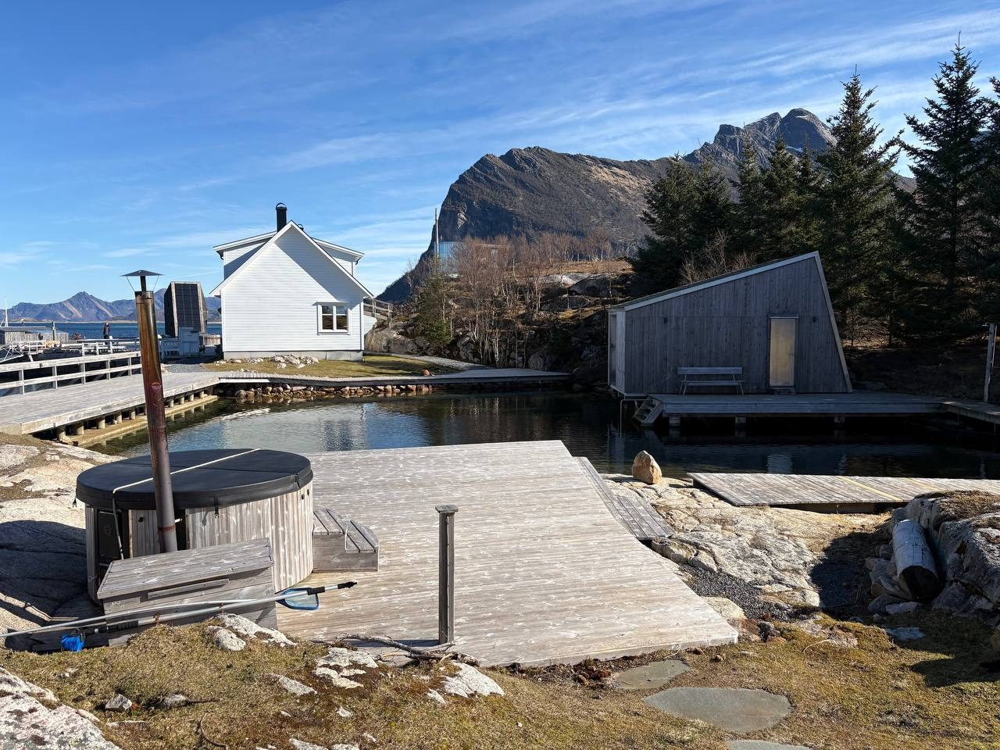
Sauna.
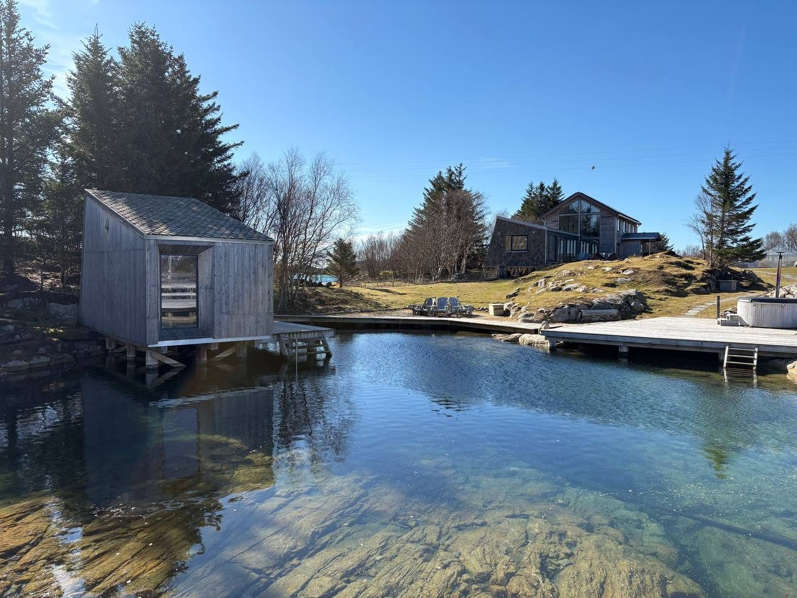
Sauna.
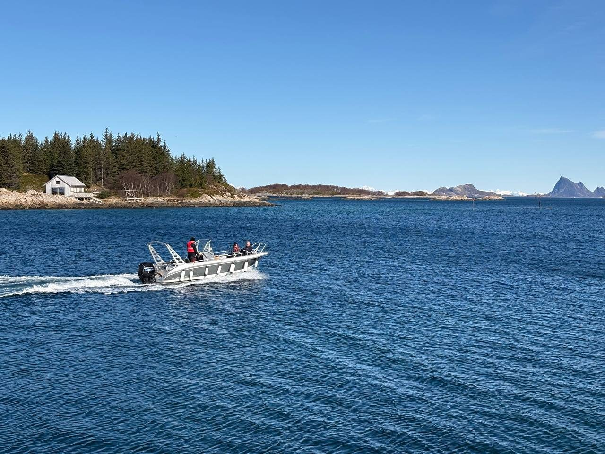
Darek odváží hosty. Fjord jako zrcadlo.
Darek mezitím odvezl hosty lodí. Vaklaf zůstal na ostrově sám. Sám a s nedojedeným bufetem — což je civilizační hřích, který se dá napravit jediným způsobem. Zvlášť uzený losos. Nechat ho ležet by bylo osobní selhání.
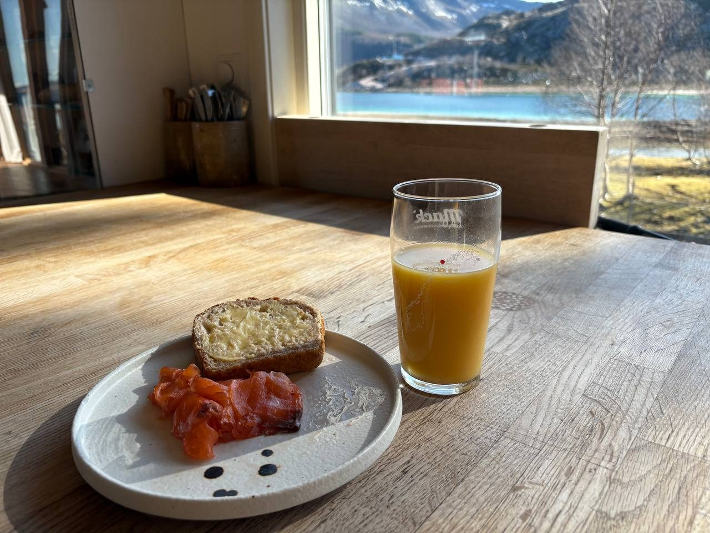
Uzený losos. Byla by škoda ho nechat.
V kuchyni zjistil zajímavou věc. Police plné sklenic. Kvašené zelí, nakládané okurky, červená řepa, něco, co vypadá jako fermentovaná cibule, a věci, které Vaklaf radši neidentifikoval. Všechno domácí. Kuchaři na Manshausenu si pickles dělají sami — a nejen pickles. Pěstují si, co se dá. Bylinky, zeleninu, všechno, co ostrov na sedmašedesátém stupni unese. Ne proto, že by museli. Proto, že můžou.
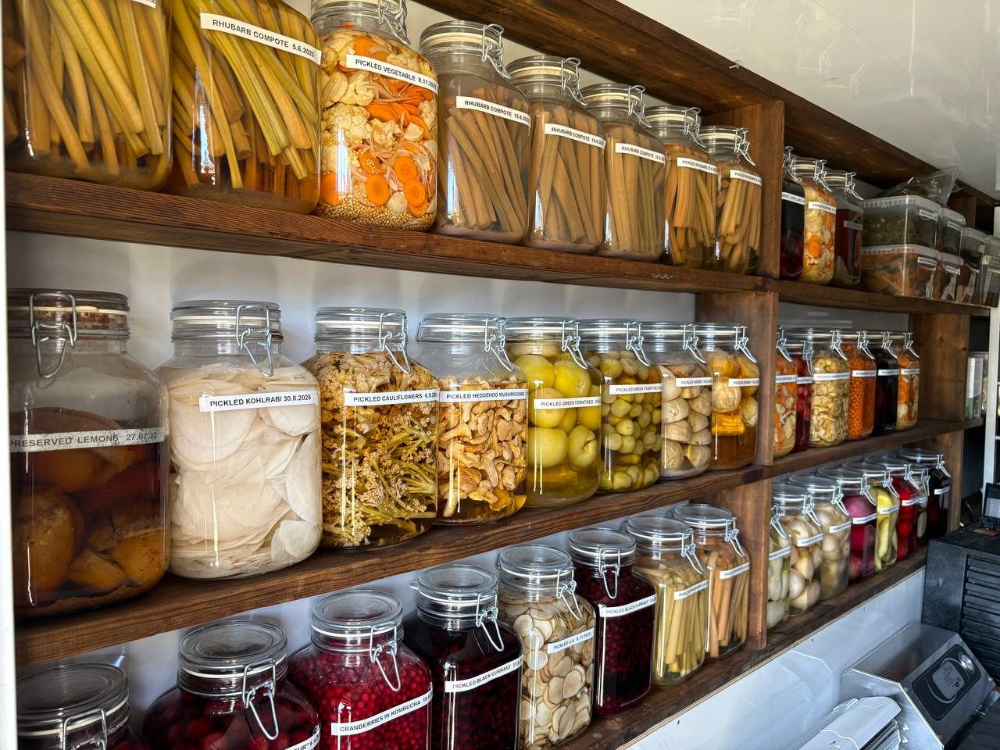
Police s pickles. Kuchaři si je dělají sami.
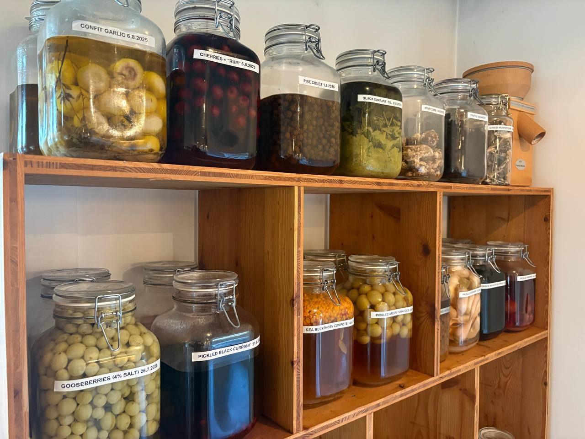
Vedlejší polička. Nakládačky, kvašenky, Nordland v kompotu.
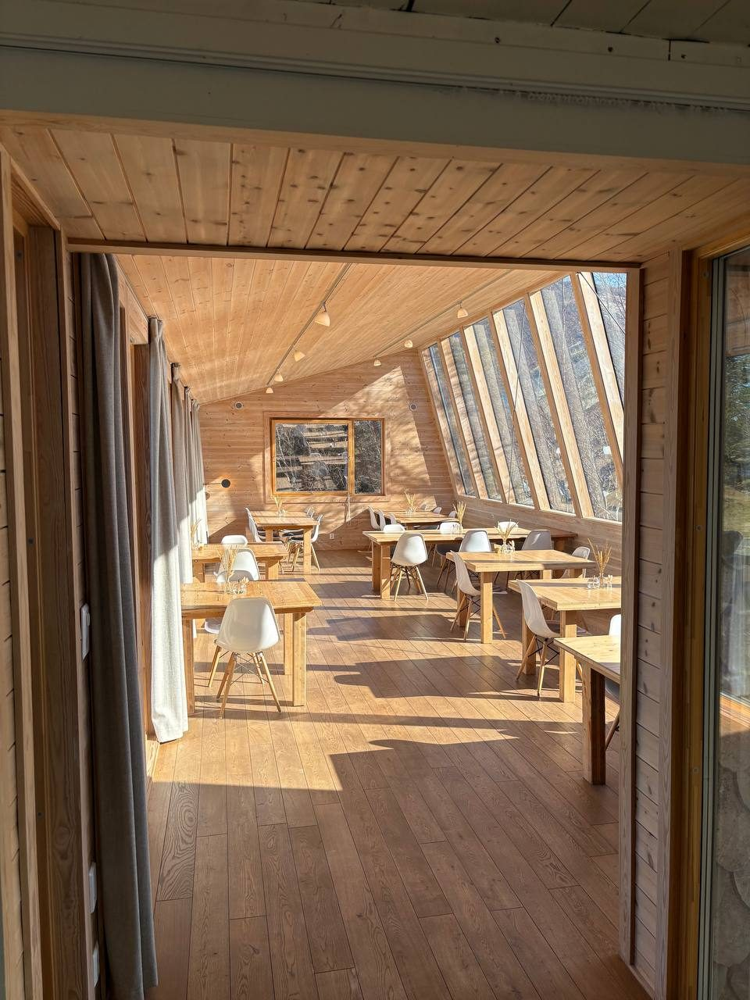
Hosté v jídelně. Prkno přijde.
Poměr kuchař : host
Manshausen má max devět chatek, každá pro dva lidi. To je maximum osmnáct hostů. V kuchyni jsou dva dobří kuchaři. Jeden kuchař na devět hostů. V běžné restauraci vaří jeden kuchař pro třicet a víc. Tady si kvašenou zeleninu a pickles dělají sami, protože proč ne, když máte čas a ostrov.
Odpoledne — na rybách
Vaklaf prohlásil, že večeře se dnes uloví. Není to věta, kterou v životě říká často. V Růžďce večeři kupuje v Jednotě a největší lov, který podstoupí, je parkování. Ale na ostrově to zní jinak. Na ostrově se dá říct „uloví se“ a nepůsobí to směšně, působí to logicky.
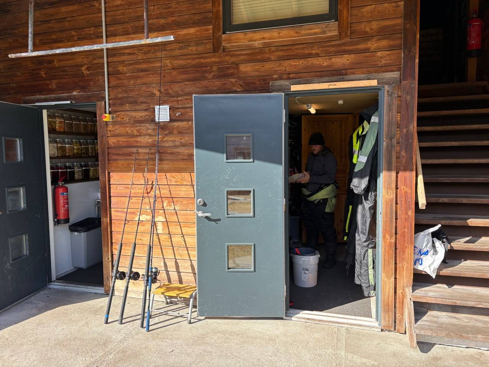
Kůlna s pruty. Žluté obleky visí jak uniformy letecké polní střílny.
Fjord byl úplně klidný. Voda jak sklo, hory nad tím jak kulisy, které někdo zapomněl odstěhovat po natáčení. Darek ví, kam jet. Vaklaf ví, kam se dívat, aby vypadal, že ví. Rozdíl mezi nimi je asi dvacet let praxe a tři prsty, které Darovi na tom moři fungují líp než Vaklafovi celá ruka.
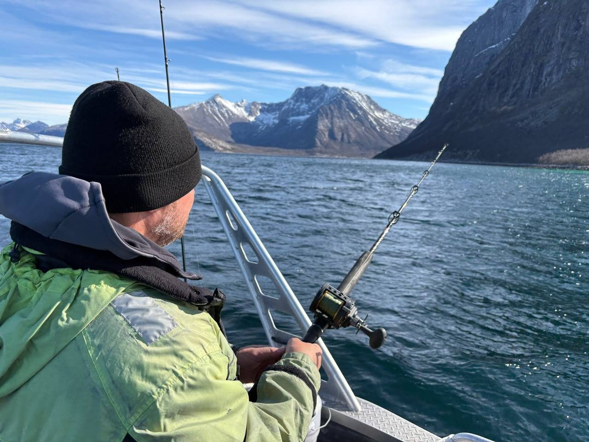
Dar s prutem. Má pohyby člověka, co tohle dělá už tak dlouho, že se nedívá na led.
Nejdřív chytali malé. „Hodně malých,“ řekl Dar. Vaklaf se podíval na první tresku a pro něj to malé nebylo. Treska má totiž obrovskou hlavu a menší tělo — což znamená, že člověk, co ji drží poprvé, má pocit, že chytil obra, a člověk, co ji drží po dvacáté, ví, že chytil hlavně hlavu.
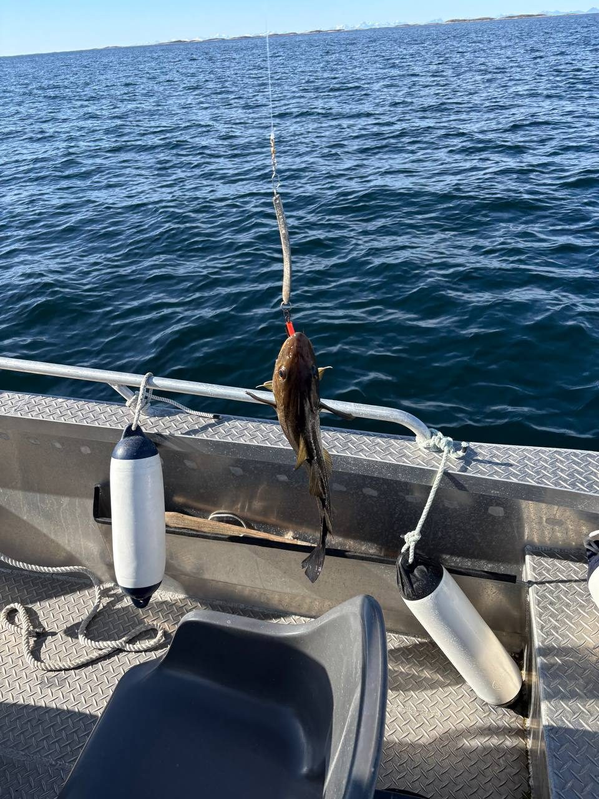
První treska. Za Vaklafa velká, za Dara malá. Pravda je někde mezi — a je to hlavně hlava.
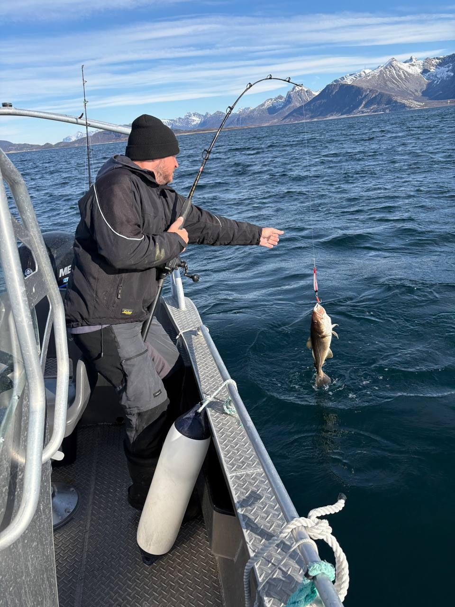
Dar tahá. Prut jde do oblouku, Vaklaf se snaží nezávidět.
Pak přišly dvě větší. A pak jedna opravdu slušná. Vaklaf ji zatáhl na palubu s výrazem člověka, co právě vyřešil evoluci.
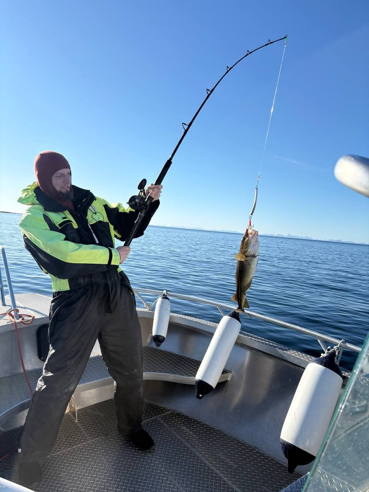
Druhá větší. Už to bylo jistý.
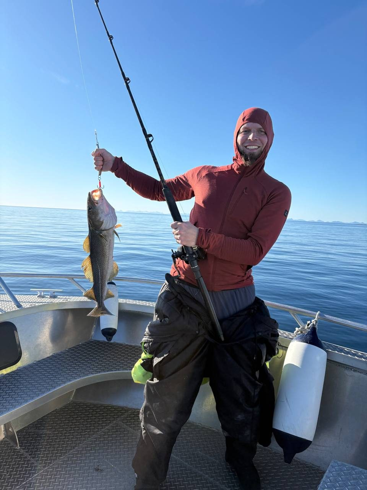
Ta slušná. Kluci se shodli, že večeře bude.
Malé ryby nejdou do pánve. Malé ryby jdou na orly. Darek totiž vozí hosty taky na safari za mořskými orly — a orli neberou pokyny, orli berou tresku. Takže drobotina jde do boxu pro příští výlet, kde bude ze vzduchu slétat něco s rozpětím křídel přes dva metry pro oběd, který Vaklaf dnes odpoledne ulovil. Velké ryby jdou s Vaklafem domů.
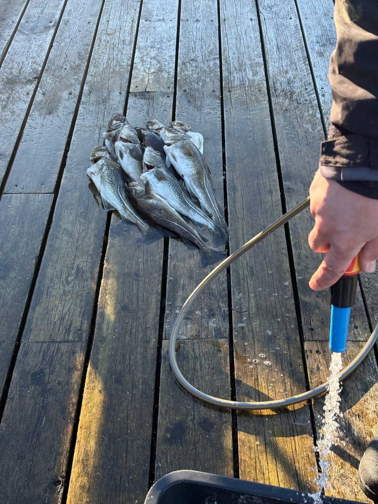
Úlovek celého odpoledne. Malé pro orly, velké pro pánev.
Večer — večeře z vlastního úlovku
Filetování dostal na starost Vaklaf. Měl totiž výhodu — doma filetuje kapry. Darek jako bývalý vegetarián ne. Takže Vaklaf vedl nůž podél páteře s klidem člověka, co to dělá každé Vánoce (a před chvílí si to připomněl na YouTube), jen s dvojnásobnou rybou. Darek dělal prvního pomocníka a čistil filety, které Vaklaf vyrobil. Po třetí rybě si Vaklaf trochu nařízl prst. Proto z procesu neexistují fotky. Vaklaf filetuje a současně fotit nemůže — teď už obzvlášť ne.
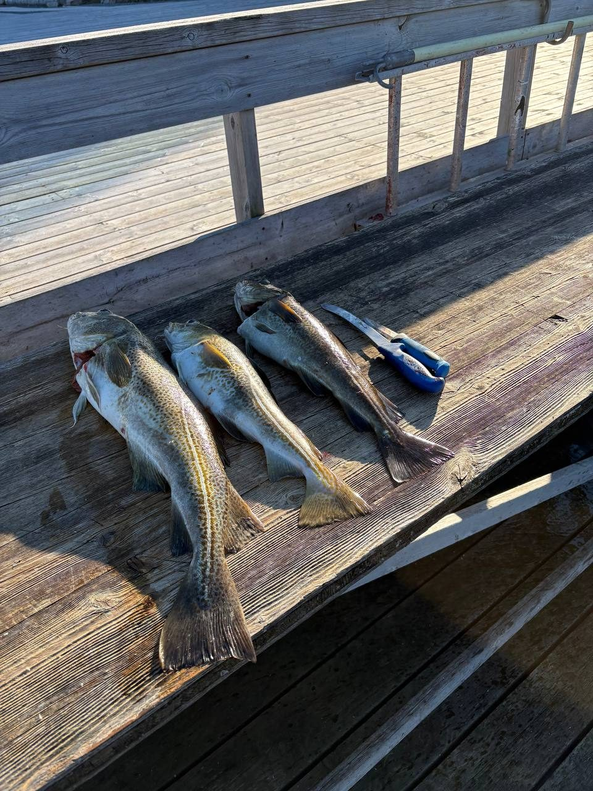
Výsledek. Filety, nůž, pár kapek krve, které si Vaklaf diskrétně setřel.
V kuchyni to byla dělba práce. Vaklaf na brambory, Darek na tresku. Pánev. Máslo. Sůl. To je všechno. Žádná omáčka, žádná redukce, žádný pěnový cosi v lžíci. Ryba, která byla před čtyřmi hodinami ve fjordu, teď skvrčí v másle.
Vaklaf si uvědomil, že Manshausen má normálně poměr jeden kuchař na devět hostů. Dneska večer byl ten poměr dva na dva. Což působí trochu nevýkonně, ale ve skutečnosti to byl zázrak managementu: Darek totiž — než se přestěhoval na ostrov nad sedmašedesátkou — byl vegetarián. Na ostrově se rybu naučil jíst i vařit, ale filetování je jiná disciplína. Jak se treska filetuje, se chlapi podívali na YouTube. Jak se filet usmaží, aby se při obracení nerozpadl, poradil ChatGPT. Michelin klíč na dveřích kuchyně, YouTube a LLM v telefonu. Tak se dneska vaří na ostrově za polárním kruhem.
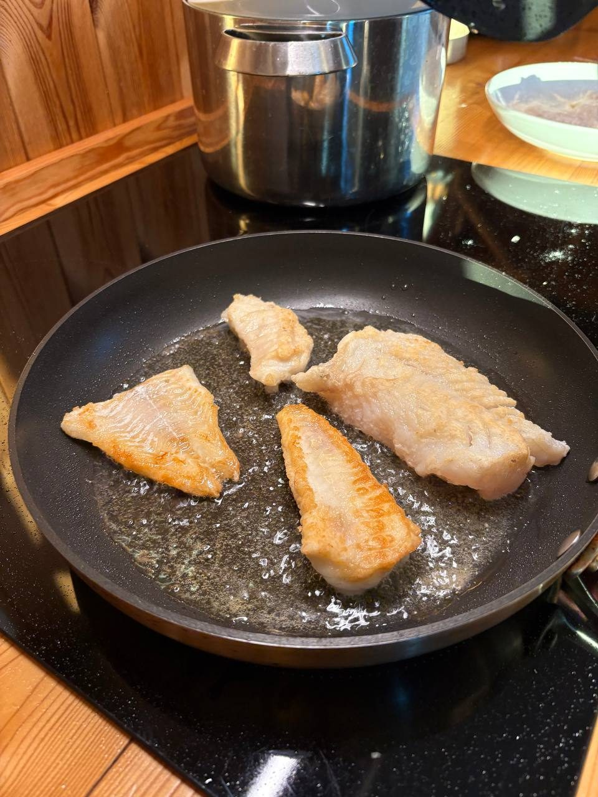
Pánev, máslo, sůl. Fjord před čtyřmi hodinami, teď v pánvi. Žádný chef, žádný menu, žádný souffle. Zbylo i na zítra.
Zbylo i na zítra. Což je situace, kterou Vaklaf z domova nezná — doma si nikdy neuvaří víc, než sní. Tady ulovil víc, než uvařil, a uvařil víc, než snědl. Poprvé v životě má v lednici zbytky, které si sám natahal z vody. Zítra ráno Darek zjistí, že se ze sklenic něco ubralo a v lednici je fólie s treskou. A řekne: „Tak to si nezvykej.“